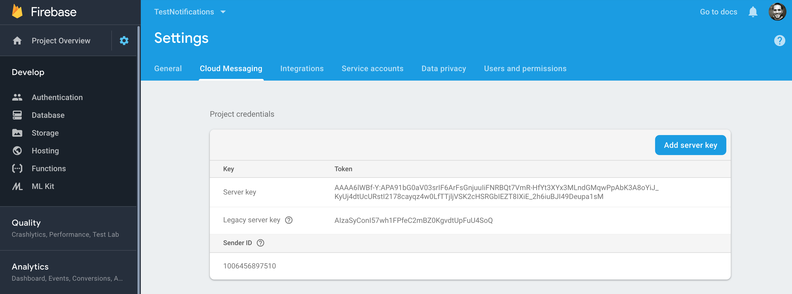
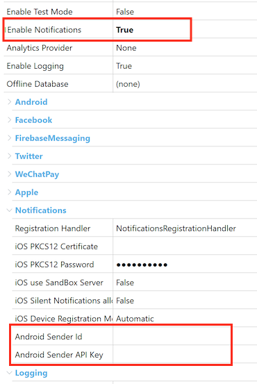
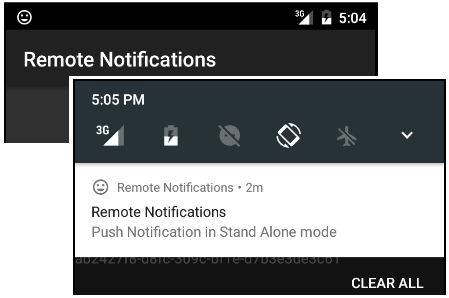

This is a step by step guide to set up push notifications for an Android Application. If you need general information on how to use push notifications please see Push Notifications in Native Mobile Applications.
Using a Google account you need to access the Firebase Console, set up a new project, and get a Sender ID, and a Server Key.

Using Push Notifications in a GeneXus-generated application is really simple, and is done by setting to True the Enable Notifications property in the Main object properties group. When doing this, a new set of properties is available (under the header Notifications):

Here you need to set the credentials previously configured for the notifications service, Android Sender ID, and Android Server API Key (set with the Server Key obtained before).
From now on, every time you execute a GeneXus application that has Push Notifications enabled in a device, the Devices Registration Service is executed in order to register and store the device information to be used in the future to send messages (Push Notifications) to that device.
Notifications are sent as shown in this Sender example.
And that’s it. The messages sent will be shown as notifications in the Android device:
